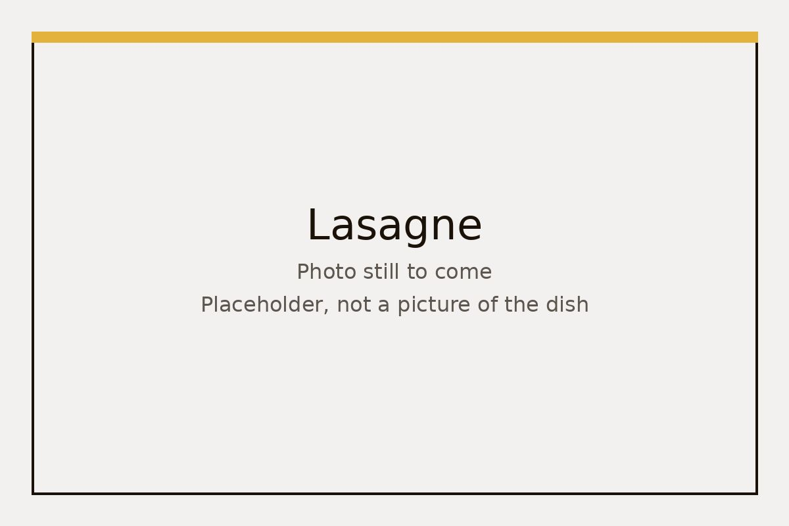

Roast chicken
About 1 hr 45 min (40 min hands-on).
Jude: Set Jude's plain chicken and mash aside before any salted butter or pepper.
Start cooking
About 1 hr 45 min (40 min hands-on).
Jude: Set Jude's plain chicken and mash aside before any salted butter or pepper.
Start cookingSwipe right to keep a dinner, or left to skip it. Keep and Skip do the same thing.
Choices agreed. The choose-by date was Tuesday 17 November.
About 1 hr 45 min (40 min hands-on).

25 min.

30 min.

Sunday: 30 min to roll and bake.

Sunday: 15 min hands-on, 1 hr 15 min simmer.
Drag a dinner up or down. Move up and Move down do the same. Skip and Freezer are buttons.
Cooking starts the day the shop arrives. Earlier days stay as they are.
This week is done. The next one is in the latest email.
Fri 20 Nov
Lemon chicken traybake from the fridge. Already in the fridge.
Sat 21 Nov
Filled pasta from the fridge. Already in the fridge.
Sun 22 Nov
Roast chicken. About 1 hr 45 min (40 min hands-on).
Jude: Set Jude's plain chicken and mash aside before any salted butter or pepper.
Mon 23 Nov
Shepherd's pie. 35 to 45 minutes.

Tue 24 Nov
Chicken shawarma bowls. 25 min.
Jude: Take Jude's chicken and a few chickpeas out before any spice. Leave out the houmous and the Peppadews.
Wed 25 Nov
Harissa salmon. 30 min.
Jude: Cut Jude's piece of salmon and bake it plain, before the harissa.
Thu 26 Nov
Lamb and carrot meatballs in tomato sauce. Sunday: 30 min to roll and bake.
Jude: Lift Jude's meatballs and a spoon of sauce out before you season.
Fri 27 Nov
Gochujang pork shoulder stew. Sunday: 15 min hands-on, 1 hr 15 min simmer.
Jude: Take Jude's plain pork, carrot and broth out before the gochujang.
Sat 28 Nov
Lasagne. 35 to 45 minutes.

Saved on this phone until you send it. Another phone will not see it yet.
9 dinners · 2 leftovers · 5 to cook · 2 from the freezer